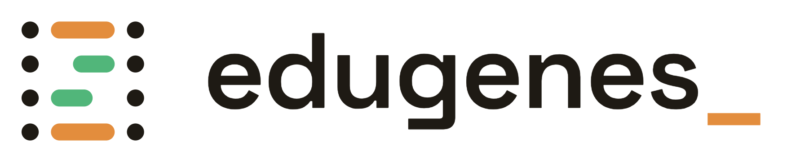
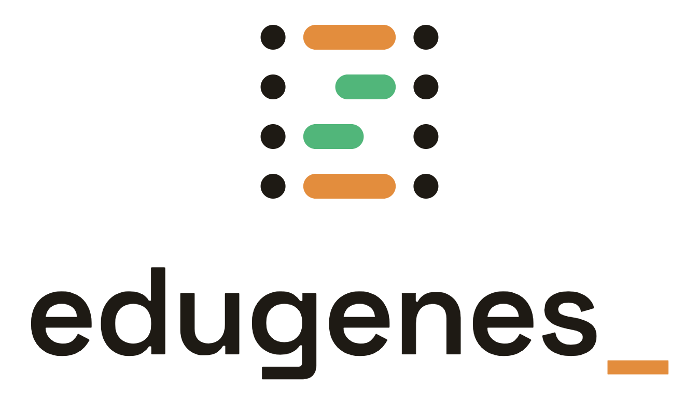
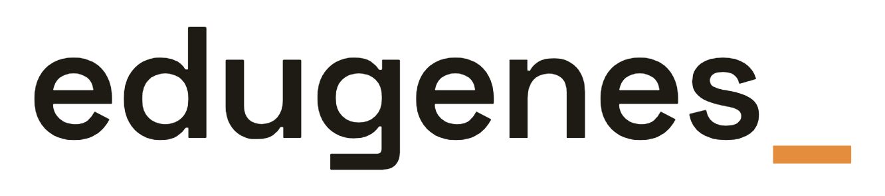
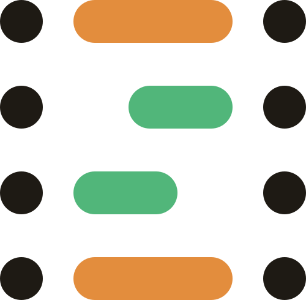
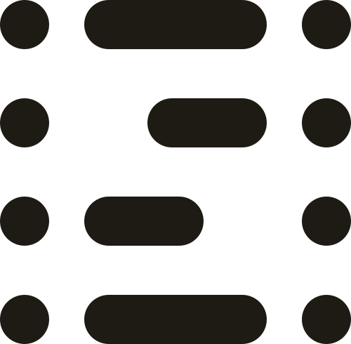
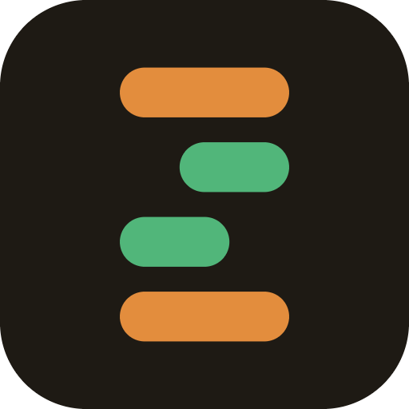
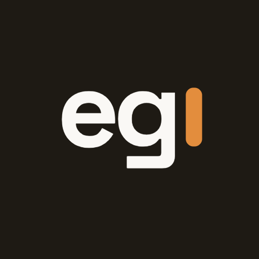

O símbolo é uma escada de pares de bases (A·T em café, C·G em verde) — o sobrenome Genes carregando a profissão. O underscore _ no fim do wordmark é o cursor do terminal: código vivo, sempre em construção.
Regra de ouro: nunca redesenhe nenhuma peça. Use sempre os arquivos desta pasta.


Versões tinta = para fundos claros · versões papel = para fundos escuros. Fundo transparente em todas.




Os avatares têm fundo cheio (quadrado) — as plataformas recortam o círculo sozinhas. Tamanhos de favicon: 16/32 (aba), 48/64 (atalhos), 180 (Apple touch), 192/512 (PWA/Android).
Light first: a marca vive primeiro no claro. No escuro, troque tinta→papel e use os acentos profundos quando a peça for pequena (legibilidade).
Pisca só em telas vivas — site, apps, apresentações em HTML. Ciclo de ~1,1s, e sempre respeitando prefers-reduced-motion.
Estático com o cursor à vista em tudo que não anima: print, PDF, avatar, favicon, assinatura de e-mail. O cursor nunca some — só para de piscar.
O símbolo (escada) nunca pisca. O gesto do cursor pertence ao wordmark e ao monograma, apenas.
| Arquivo | Uso |
|---|---|
svg/simbolo-duotone.svg | Escada com pontos tinta e barras café/verde — o símbolo padrão sobre fundos claros |
svg/simbolo-duotone-para-fundo-escuro.svg | Mesma escada com pontos claros — símbolo sobre fundos escuros |
svg/simbolo-mono-tinta.svg | Escada 100% tinta — 1 cor sobre claro: carimbo, P&B, marca d'água |
svg/simbolo-mono-papel.svg | Escada 100% papel — 1 cor sobre escuro ou sobre café/verde |
svg/favicon-barras.svg | Só as 4 barras, fundo transparente — base vetorial do favicon |
svg/favicon-tile-escuro.svg | Barras em tile quadrado arredondado tinta — vira o favicon.svg do site |
svg/favicon-circulo-escuro.svg | Barras em círculo tinta — plataformas que pedem ícone redondo |
png/favicon-16.png · -32.png | Tile raster pequeno — aba do navegador (fallback PNG) |
png/favicon-48.png · -64.png | Tile raster médio — atalhos, bookmarks, Windows |
png/favicon-180.png | Tile 180×180 — apple-touch-icon (iOS) |
png/favicon-192.png · -512.png | Tile 192/512 — PWA e Android (manifest) |
png/avatar-eg-tinta.png | Avatar padrão — eg▍ sobre tinta, cursor café. GitHub, LinkedIn, redes |
png/avatar-eg-claro.png | eg▍ sobre fundo claro, cursor café profundo — em plataformas escuras, destaca |
png/avatar-eg-cafe.png | eg▍ sobre café, cursor café profundo — alternativo vibrante, usar com moderação |
png/lockup-horizontal-tinta.png · -papel.png | Marca principal — headers de docs, slides. Tinta = fundo claro, papel = escuro |
png/lockup-empilhado-tinta.png · -papel.png | Formatos quadrados/verticais — capas, cards de share, stories |
png/wordmark-tinta.png · -papel.png | Só o edugenes_ — faixas baixas: rodapés, créditos, navegação |
README.md | Instruções de implementação para o Claude Code — onde colocar cada arquivo no site, tags do head, manifest, tokens CSS, CSS do cursor e regras obrigatórias |
O arquivo README.md desta pasta é o manual de implementação: diz onde cada arquivo vai no código (public/, tags do <head>, manifest, tokens CSS, o cursor piscando em CSS com prefers-reduced-motion) e as 7 regras obrigatórias.
Pra garantir que o Claude Code siga sempre: o README traz na seção 9 um bloco pronto pra colar no CLAUDE.md do seu repositório — assim toda conversa futura no seu código já nasce sabendo as regras da marca.